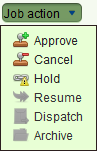

Approve a Job
The changes you make to property and parcel information while processing a job remain
pending until the job is approved. Once all tasks on the job are completed, you should use
the  Approve action in the Job action
dropdown of the Job Details screen to approve the job.
Approve action in the Job action
dropdown of the Job Details screen to approve the job.
Steps
-
-
Open the job from your My jobs list and use the
 Validate tool to check the status of the
job data. If there are any rule failures, review the job data and correct the issues as
appropriate before proceeding to approve the job.
Validate tool to check the status of the
job data. If there are any rule failures, review the job data and correct the issues as
appropriate before proceeding to approve the job.
-
Use the Approve action in the Job
action dropdown to approve the job. This will update the status of the job to Approved
as well as update the parcel network and formalize any changes to state land property
using the information captured for the job.

Job Action dropdown
-
-
You can optionally dispatch a notice and any other relevant information to the any
parties that need to be notified that the job is approved. You can record that when the
notice is sent by using the
 Dispatch
action of the Job action dropdown.
Dispatch
action of the Job action dropdown.
-
If not further actions are required for the job use the
 Archive action in the Job action dropdown to
finalize the job and remove it from your My jobs list on the Dashboard
Archive action in the Job action dropdown to
finalize the job and remove it from your My jobs list on the Dashboard
Notes
-
-
The Approve action will only be
enabled if all of the tasks on the Tasks tab are either Completed or Cancelled. You
must also be assigned the the Approve Job security role.
-
Once a job is approved, you cannot edit it again.
-
Don’t forget to archive the job otherwise it will remain displayed in your My jobs list
on the Dashboard.
Also See
-
-
SOLA State Land
-
State Land Desktop Screens